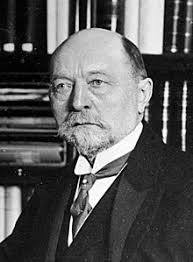

Diphtheria Antitoxin
Behring's discovery of the diphtheria antitoxin in 1890 was a major breakthrough in medicine, saving countless lives.
Emil von Behring (1854–1917) was a German physiologist who received the first Nobel Prize in Physiology or Medicine in 1901 for his discovery of a diphtheria antitoxin.
Emil von Behring was born in Hansdorf, West Prussia (now Poland). He studied medicine at the Kaiser Wilhelm Academy for Military Physicians in Berlin. His early research focused on bacteriology and immunology.
Behring's work on serum therapy for diphtheria and tetanus was groundbreaking. He discovered that injecting serum from an immunized animal could protect and cure humans from these diseases.
Emil von Behring's contributions to immunology and infectious disease treatment have had a lasting impact on medicine. His pioneering work laid the foundation for modern therapies and vaccines.
He is remembered not only for his scientific achievements but also for his dedication to improving public health. Marburg, where he spent much of his career, honors his legacy with numerous memorials and a dedicated research institute.